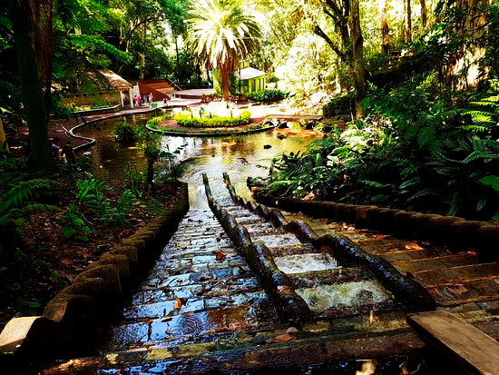

Parques de Xalapa
¡BIENVENIDO!
InforXalapa se trata de un proyecto que tiene como objetivo principal apoyar el sector turistico de la ciudad de Xalapa.
Encontrarás los lugares más representativos de la ciudad para poder disfrutar de tu estancia
Lugares para la convicencia familiar y un paseo tranquilo


Lugares de entrenimiento y vida nocturna
Y mucho más...
Registrate en InforXalapa para formar parte de esta comunidad
Y así aprovechar las funcionalidades al estar registrado...